2026年北京市中考物理试题 原卷解析
2026年北京市初中学业水平考试
物理
（满分70分，考试时间70分钟）
第一部分
一、单项选择题（下列每题均有四个选项，其中只有一个选项符合题意。共24分，每题2分）
1. 下列物品中，通常情况下属于导体的是（ ）
A. 陶瓷碗B. 塑料饭盒C. 不锈钢勺D. 纸杯
【答案】C
【解析】
【详解】A．陶瓷属于绝缘体，故A不符合题意；
B．塑料属于绝缘体，故B不符合题意；
C．不锈钢是金属，通常情况下金属属于导体，故C符合题意；
D．纸属于绝缘体，故D不符合题意。
故选C。
2. 在自行车的设计中，目的是减小摩擦的是（ ）
A. 轮胎上制有花纹B. 轴承中装有滚珠
C. 脚蹬面做得凹凸不平D. 车把上套有橡胶套
【答案】B
【解析】
【详解】A．轮胎制有花纹，是通过增大接触面粗糙程度，增大摩擦，故A不符合题意；
B．轴承中装滚珠，是将滑动摩擦变为滚动摩擦，减小摩擦，故B符合题意；
C．脚蹬面凹凸不平，是通过增大接触面粗糙程度，增大摩擦，故C不符合题意；
D．车把套橡胶套，是通过增大接触面粗糙程度，增大摩擦，故D不符合题意。
故选B。
3. 下列做法中符合安全用电要求的是（ ）
A. 在高压线附近放风筝
B. 用湿抹布擦拭正在工作的台灯
C. 用电器电线绝缘皮破损了仍继续使用
D. 身边有人触电时，要立即安全地切断电源
【答案】D
【解析】
【详解】A．安全用电原则要求不靠近高压带电体，在高压线附近放风筝易发生高压触电事故，故A不符合题意；
B．生活用水属于导体，湿抹布容易导电，擦拭正在工作的通电台灯易引发触电事故，故B不符合题意；
C．电线绝缘皮破损后易引发触电或短路事故，不能继续使用，故C不符合题意；
D．身边有人触电时应立即安全切断电源，可避免施救者触电，符合安全用电要求，故D符合题意。
故选D。
4. 如图所示的实例中，为了减小压强的是（ ）
A.
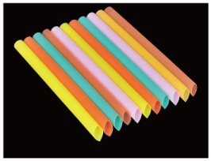
饮料管的一端剪成斜口B. 多轴平板货车有很多车轮
C.
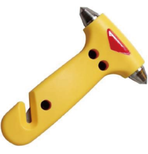
逃生锤的锤头很尖D.
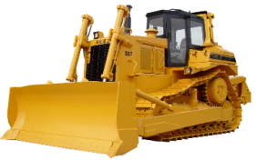
推土机的铲刃很锋利【答案】B
【解析】
【详解】ACD．饮料管的一端剪成斜口、逃生锤的锤头很尖、推土机的铲刃很锋利，都是在压力一定时，通过减小受力面积来增大压强，故ACD不符合题意；
B．多轴平板货车有很多车轮，是在压力一定时，通过增大受力面积来减小压强，故B符合题意。
故选B。
5. 如图所示的是被誉为“古钟之王”的永乐大钟。用大小不同的力撞击钟的同一位置使其发声，改变了大钟发出声音的（ ）
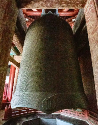
A. 响度B. 音调C. 音色D. 频率
【答案】A
【解析】
【详解】A．响度由振幅决定，用大小不同的力撞击钟，钟的振幅不同，改变了声音的响度，故A符合题意；
BD．音调由频率决定，钟的固有频率由其自身结构决定，撞击力大小不改变其振动频率，故音调和频率不变，故BD不符合题意；
C．音色由发声体的材料和结构决定，撞击力大小不改变钟的材料和结构，故音色不变，故C不符合题意。
故选A。
6. 图中所示的运动员正在奋力奔跑。下列说法正确的是（ ）
A. 以教学楼为参照物，运动员是运动的
B. 以树木为参照物，站着的学生是运动的
C. 以地面为参照物，运动员是静止的
D. 以运动员为参照物，树木是静止的
【答案】A
【解析】
【详解】A．运动员奔跑时与教学楼位置发生变化，以教学楼为参照物，运动员是运动的，故A正确；
B．站着的学生与树木位置未发生变化，以树木为参照物，学生是静止的，故B错误；
C．运动员奔跑时与地面位置发生变化，以地面为参照物，运动员是运动的，故C错误；
D．运动员奔跑时与树木位置发生变化，以运动员为参照物，树木是运动的，故D错误。
故选A。
7. 如图所示，飞机着陆后在水平跑道上减速滑行。下列说法正确的是（ ）
A. 飞机受到的重力和飞机对跑道的压力是一对平衡力
B. 飞机对跑道的压力和跑道对飞机的支持力是一对相互作用力
C. 飞机在跑道上减速滑行是由于飞机失去了惯性
D. 飞机在跑道上减速滑行的过程中不再受到力的作用
【答案】B
【解析】
【详解】A．飞机受到的重力受力物体是飞机，飞机对跑道的压力受力物体是跑道，两个力作用在不同物体上，不满足二力平衡条件，故A错误；
B．飞机对跑道的压力和跑道对飞机的支持力，大小相等、方向相反、作用在同一直线上且作用在两个物体上，符合相互作用力条件，故B正确；
C．惯性是物体固有属性，一切物体在任何情况下都有惯性，飞机不会失去惯性，减速滑行是因为受到阻力作用改变了运动状态，故C错误；
D．飞机在跑道上减速滑行，运动状态发生改变，根据力是改变物体运动状态的原因可知，飞机一定受到力的作用，故D错误。
故选B。
8. 如图所示，易拉罐中装有适量的水，用酒精灯加热，当有蒸汽喷出时，风车的扇叶就转动起来。下列说法正确的是（ ）
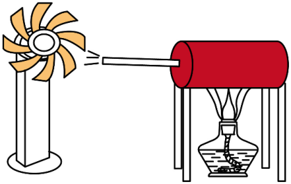
A. 易拉罐中水的内能增加是通过做功的方式实现的
B. 酒精灯内的酒精减少会导致酒精的热值变小
C. 推动扇叶转动的水蒸气的内能减小
D. 推动扇叶转动的水蒸气的内能全部转化为扇叶的机械能
【答案】C
【解析】
【详解】A．用酒精灯加热水，水吸收热量，是通过热传递的方式增加内能，故A错误；
B．热值是燃料的特性，只与燃料种类有关，与质量无关，酒精减少热值不变，故B错误；
C．水蒸气推动扇叶转动，水蒸气对扇叶做功，内能转化为机械能，水蒸气内能减小，故C正确；
D．水蒸气推动扇叶转动时，部分内能散失到空气中，且存在摩擦，内能不可能全部转化为机械能，故D错误。
故选C。
9. 某游客在景区看到如图所示的情景，下列说法正确的是（ ）
A. 树在水中的倒影是由光的折射形成的
B. 游客看到的水中鹅卵石的位置比它的实际位置浅
C. 树在水中的倒影是实像
D. 游客看到的水中的“鱼”是实像
【答案】B
【解析】
【详解】A．树在水中的倒影属于平面镜成像，是由光的反射形成的，故A错误；
B．鹅卵石反射的光从水中斜射入空气时发生折射，折射角大于入射角，人眼逆着折射光线看去，看到的是位置变浅的虚像，故B正确；
C．树在水中的倒影属于平面镜成像，成的是正立、等大的虚像，故C错误；
D．游客看到水中的“鱼”，是鱼反射的光从水中斜射入空气中发生折射形成的虚像，故D错误。
故选B。
10. “天锅蒸馏法”是中国固态发酵蒸馏酒的标志性技艺，其工作过程示意如图。酿酒原料在地锅中被加热，产生含有酒精蒸气的热汽。含有酒精蒸气的热汽上升遇到内盛冷水的天锅底部形成液态酒，落入导流装置流出。关于该过程，下列说法正确的是（ ）
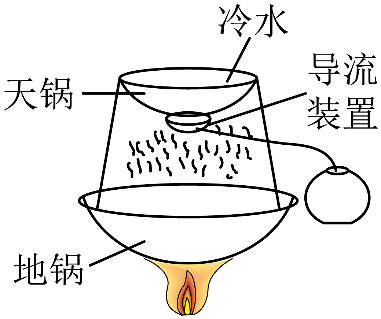
A. 酿酒原料中的液态酒精变成酒精蒸气是升华现象
B. 酒精蒸气形成液态酒精是汽化现象
C. 酒精蒸气形成液态酒精的过程中会放出热量
D. 天锅中冷水的温度保持不变
【答案】C
【解析】
【详解】A．液态酒精变成酒精蒸气，物质由液态变为气态，属于汽化现象，故A错误；
B．酒精蒸气形成液态酒精，物质由气态变为液态，属于液化现象，故B错误；
C．酒精蒸气形成液态酒精属于液化现象，液化过程放出热量，故C正确；
D．酒精蒸气液化放出的热量被天锅中的冷水吸收，冷水温度升高，故D错误。
故选C。
11. 如图所示，用滑轮组提升重为的重物，绳子自由端在拉力的作用下竖直匀速上升了，用时，为。动滑轮重。下列说法正确的是（ ）
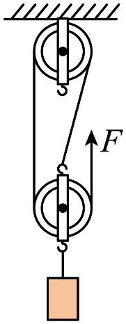
A. 重物上升的速度为B. 拉力的功率为
C. 滑轮组的额外功为D. 滑轮组的机械效率为90%
【答案】D
【解析】
【详解】A．由图可知，承担物重的绳子段数
重物上升的高度
重物上升的速度
故A错误；
B．拉力做的总功
拉力的功率
故B错误；
C．拉力做的有用功
滑轮组的额外功
故C错误；
D．滑轮组的机械效率
故D正确。
故选D。
12. 图甲所示的是机器人在水平地面上抓取物体时双腿并拢下蹲的姿态，其示意图如图乙所示，机器人的膝关节可视为一个圆柱体，为其轴线上一点。电动机对两膝关节的动力可等效为作用在两膝关节之间点的一个竖直方向的力，机器人的膝关节、大腿及上半身总重为，重力的作用线通过延长线上的点，与地面平行。此时可将机器人的膝关节、大腿及上半身看成杠杆，如图丙所示。已知机器人总重为，大腿长度为，膝关节半径为，的长度为大腿长度的 ，每只脚与地面的接触面积为。下列关于机器人静止在此姿态下的说法正确的是（ ）
，每只脚与地面的接触面积为。下列关于机器人静止在此姿态下的说法正确的是（ ）
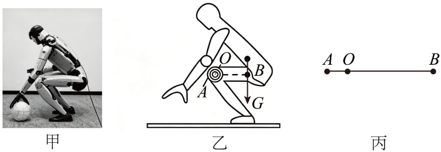
A. 机器人对地面的压强为
B. 机器人膝关节、大腿及上半身可视为省力杠杆
C. 电动机作用在点的力是竖直向上的
D. 电动机作用在点的力为
【答案】D
【解析】
【详解】A．机器人静止在水平地面上，对地面的压力
受力面积
压强
故A错误；
B．由题意知，动力臂
阻力臂
因
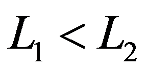
，该杠杆为费力杠杆，故B错误；C．以为支点，重力 作用在 点且竖直向下，使杠杆绕点顺时针转动；为保持平衡，作用在点的力应使杠杆逆时针转动，因 点在 点左侧，故该力方向应竖直向下，故C错误；
D．根据杠杆平衡条件
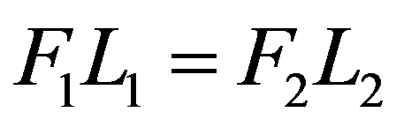
可得 即
解得，故D正确。
故选D。
二、多项选择题（下列每题均有四个选项，其中符合题意的选项均多于一个。共6分，每题2分。每题选项全选对的得2分，选对但不全的得1分，有错选的不得分）
13. 如图所示风力发电机，部分参数见下表，其中叶片额定转速是指叶片在额定风速下单位时间内转动的圈数。已知风力发电机工作时的输出功率与风速的三次方成正比。关于此风力发电机，下列说法正确的是（ ）
启动风速 | 3m/s |
停机风速 | 25m/s |
额定风速 | 12m/s |
叶片额定转速 | 15圈/min |
额定输出功率 | 3200kW |
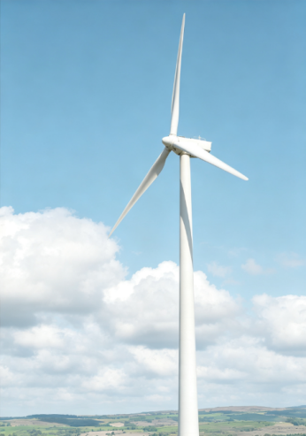
A. 风力发电机发电是电磁感应现象的应用
B. 风力发电机发电的过程中将风能转化成电能
C. 在额定风速下，风力发电机的叶片转动9圈输出的电能为
D. 当风速为时，风力发电机的输出功率为
【答案】ABC
【解析】
【详解】A．风力发电机的核心工作原理是电磁感应，叶片带动内部发电机的线圈切割磁感线产生感应电流，属于电磁感应现象的应用，故A正确；
B．风力发电过程中，风的动能先带动叶片转动获得机械能，最终通过发电机转化为电能，本质是将风能转化为电能，故B正确；
C．叶片转动9圈所用时间
输出的电能
故C正确；
D．由题意知
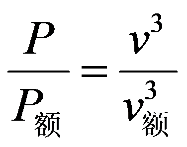
，当风速为6m/s时，输出功率故D错误。
故选ABC。
14. 如图所示，重物挂在弹簧测力计下静止时，弹簧测力计示数为；再分别将其浸没在水和密度为的液体中静止时，弹簧测力计的示数分别为
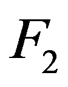
、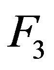
。已知水的密度为。下列说法正确的是（ ）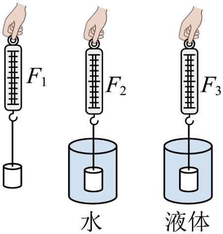
A. 重物在水中受到的浮力为
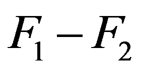
B. 重物在水中时，水对重物的压力的合力为
C. 若
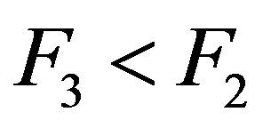
，则液体的密度D. 液体的密度
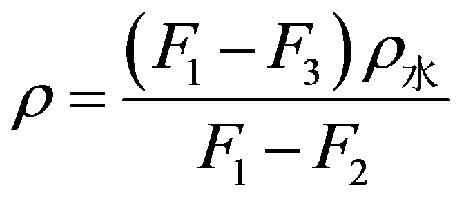
【答案】AD
【解析】
【详解】A．由称重法测浮力公式可知，重物在水中受到的浮力
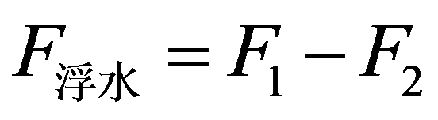
，故A正确；B．浮力产生的原因是液体对物体压力的合力，即水对重物的压力的合力
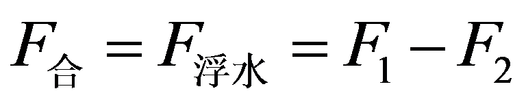
，故B错误；C．重物在液体中受到的浮力
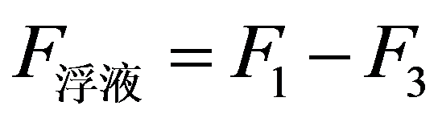
，若，则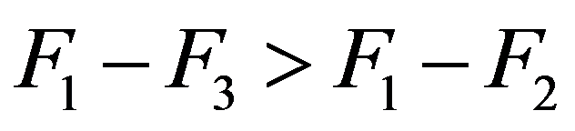
即；由阿基米德原理且重物浸没时相同可知，，故C错误；
D．由可得重物排开液体的体积
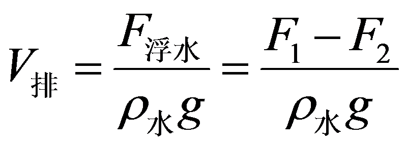
由可得液体的密度
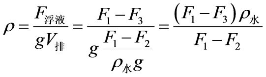
，故D正确。故选AD。
15. 湿敏电阻可以感知环境湿度（湿度是衡量空气干湿程度的常用指标，符号为，通常用百分数表示），图甲为两个湿敏电阻和的阻值随湿度变化的关系图像。的感湿范围为20%到40%，的感湿范围为36%到60%，当低于感湿范围下限时湿敏电阻相当于绝缘体，当超过感湿范围上限时湿敏电阻保持感湿上限的阻值不变。某科技小组设计了如图乙所示的测量湿度的电路，间电压恒定，为定值电阻，智能开关初始状态接且能根据电流大小自动控制电路，使电阻、能分别参与测量，从而实现电路在湿度20%到60%范围内连续测量。开关接状态下，当电流小于时开关保持与连接，当电流大于或等于时开关自动由转向 。开关接状态下，当电流大于
。开关接状态下，当电流大于
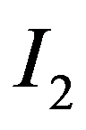
时开关保持与连接，当电流减小至时开关自动由转向。下列说法正确的是（ ）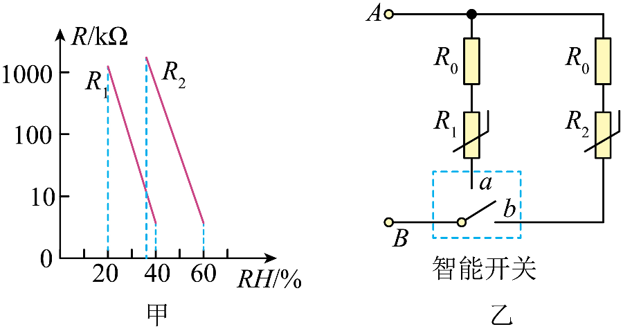
A. 电路中流过的电流越大，则湿度越大
B. 湿度为25%时对应的电流小于湿度为30%时对应的电流
C. 所对应的湿度大于所对应的湿度
D. 若湿度在和所对应的湿度之间，开关可能接，也可能接
【答案】BCD
【解析】
【详解】A．设 间电压为 。开关接 时，由图甲知 随湿度增大而减小，故 增大；当湿度增至 40% 时， 达最小值，电流达到 ，开关切向 。此时 阻值（由图知远大于 最小值）较大，由 可知电流突变减小。即湿度增大时电流可能减小，故 A 错误；
B．25% 和 30% 均在 感湿范围（20%~40%）内，开关接 。由 及 随湿度增大而减小可知，25% 时 较大，电流较小，即 ，故 B 正确；
C．开关接 时，电流随湿度增大而增大，当
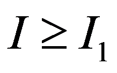
时切向 ，此时 较小，对应湿度较大（接近 40%）；开关接 时，电流随湿度减小而减小，当 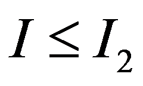
时切向 ，此时 较大，对应湿度较小（接近 36%）。故 对应湿度大于 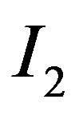
对应湿度，故 C 正确；D．由 C 分析可知， 对应湿度（约 40%）大于 对应湿度（约 36%）。当湿度在 36% 到 40% 之间时，若湿度是从 20% 增加而来，电流未达 ，开关接 ；若湿度是从 60% 减小而来，电流未降至 ，开关接 。故 D 正确。
故选 BCD。
第二部分
三、实验探究题（共28分，16、17、18、20、21题各4分，19、23题各3分，22题2分）
16.
（1）如图甲所示，把一根条形磁体悬挂起来，用另一根条形磁体接近它，可以观察到的现象是____________________________________________________________________。
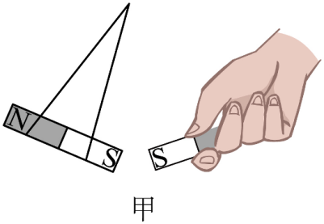
（2）如图乙所示，将两个金属支架分别与电池的两极相连，给线圈通电，观察到线圈转动起来，这就是一个简易电动机，其工作原理是____________________________________________________________。
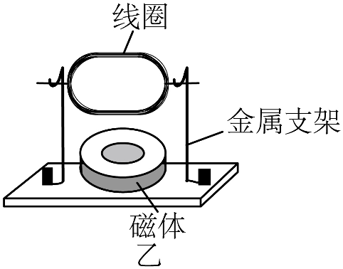
【答案】（1）两根磁体相互排斥
（2）通电导体在磁场中受到力的作用
【解析】
【小问1详解】
图甲探究磁极间的相互作用规律。悬挂的磁体可以自由转动，拿另一磁体的S极靠近悬挂的磁体的S极，根据同名磁极相斥的原理，可得两个磁体会相互排斥。
【小问2详解】
简易电动机工作原理是给线圈通电，线圈处在磁体的磁场当中，由于通电导体在磁场中受到力的作用，于是线圈转动，把电能转化为机械能。
17.
（1）如图甲所示，封闭的玻璃容器中有少量碘颗粒，向容器浇热水，可以观察到容器中充满紫色的碘蒸气，碘发生的物态变化是_______________。
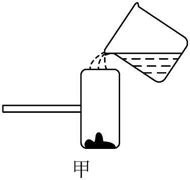
（2）在冷水和热水中同时各滴入一滴蓝墨水，过一段时间，观察到蓝墨水在热水中比在冷水中扩散得快（如图乙所示），该实验说明___________________________________。
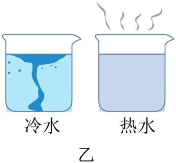
【答案】（1）升华 （2）温度越高，分子热运动越剧烈
【解析】
【小问1详解】
容器里是固态碘颗粒，浇热水后，固态碘直接变成紫色的碘蒸气，物质从固态直接变为气态，该物态变化是升华。
【小问2详解】
同时往冷水、热水各滴入一滴蓝墨水，热水中墨水扩散更快，扩散现象反映分子在不停地做无规则运动，热水温度高，扩散速度快，说明温度越高，分子热运动越剧烈。
18.
（1）某同学用图甲所示的装置探究光在反射时反射角与入射角的关系，使一束光贴着纸板沿某一个角度射到点，经平面镜反射，沿另一个方向射出。在纸板上用笔描出入射光和反射光。改变光束入射的角度，重复实验。测量和的数据记录在下表中。
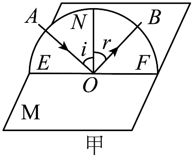
入射角 | | | | | 
| |
反射角 | | | | |
| |
实验结论是___________________________________________________________________________。
（2）某同学利用同一凸透镜做了两次实验，蜡烛、透镜、光屏所在位置以及光屏上得到清晰像的情况如图乙、丙所示，并据此得出相应的结论。
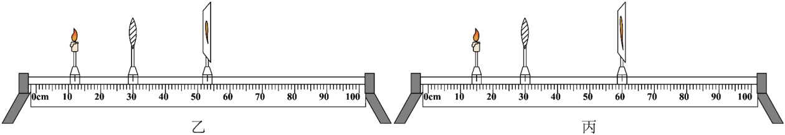
该同学探究的问题是_________________________________________________。
【答案】（1）在光的反射现象中，反射角等于入射角
（2）凸透镜成实像时像距与物距的关系
【解析】
【小问1详解】
表格数据入射角70°、60°、50°、40°、30°、20°；对应反射角70°、60°、50°、40°、30°、20°， 由此可得实验结论：在光的反射现象中，反射角等于入射角。
【小问2详解】
观察乙、丙图：蜡烛到凸透镜的距离（物距）发生改变，透镜是同一个（焦距不变），移动光屏得到清晰的像，像距也随之改变。
实验中改变物距，观察像距和成像情况，所以探究的问题： 凸透镜成实像时像距与物距的关系。（其他，如：凸透镜成实像时像的大小与物距的关系，合理即可）
19. 某同学利用电压表、电流表、滑动变阻器、电源、开关及导线测量定值电阻的阻值。
（1）写出实验原理：__________________________________________________。
（2）画出实验电路图。
【答案】（1）
（2）
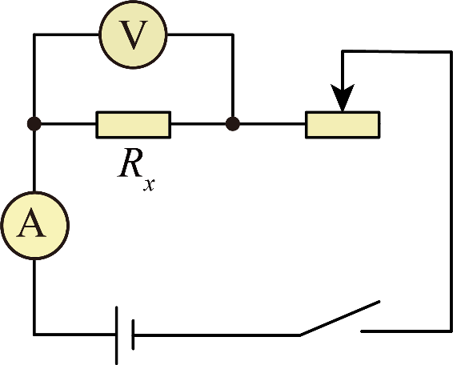
【解析】
【小问1详解】
伏安法测定值电阻的阻值，实验依据欧姆定律，通过测量定值电阻两端电压和通过它的电流，再利用变形公式计算电阻，所以实验原理是
【小问2详解】
伏安法测电阻时，电源、开关、定值电阻、电流表、滑动变阻器串联在电路中，电流表测量通过的电流，电压表并联在定值电阻两端，测量两端电压，滑动变阻器按“一上一下”接线，既能保护电路，又可以改变定值电阻两端电压，实现多次测量，求电阻平均值，减小实验误差，按照该连接方式画出对应的电路图即可。
20. 实验桌上有两个相同的烧杯，分别盛有水和酒精，某同学利用微小压强计和刻度尺探究液体内部压强与液体密度是否有关。
（1）实验中液体内部压强是通过微小压强计_________________反映的。
（2）他将微小压强计的探头分别放在水和酒精中进行实验，由图甲、乙得出结论“液体内部压强与液体密度有关”。
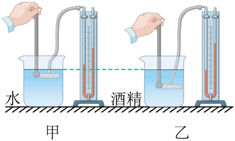
该同学在探究过程中存在的问题是_______________________________________________。
【答案】（1）U形管两侧液面高度差
（2）没有控制探头所处深度相同
【解析】
【小问1详解】
本实验使用转换法，液体压强越大，探头受到的压力越大，U 形管两边液面高度差就越大，通过液面高度差来体现液体内部压强大小。
【小问2详解】
探究液体压强与液体密度的关系，根据控制变量法，应当保持探头浸入液体的深度相同，只改变液体的密度。图中甲、乙探头所处深度不一样，存在两个变量，因此不能得出正确结论。
21. 某同学利用如图所示的电路探究在串联电路中，、两端的总电压与两端电压、两端电压
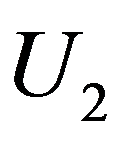
之间的关系。实验数据如下表所示。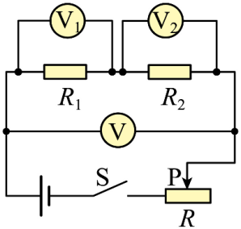
| 0.8 | 0.9 | 1.0 | 1.2 | 1.4 | 1.6 |
| 0.4 | 0.4 | 0.5 | 0.6 | 0.7 | 0.8 |
| 1.2 | 1.3 | 1.5 | 1.8 | 2.1 | 2.4 |
（1）该实验中滑动变阻器起到的作用一方面是保护电路，另一方面是___________________________；
（2）进一步分析表中数据与、之和的关系，得到的实验结论是____________________________。
【答案】（1）改变、两端的总电压，多次测量寻找普遍规律
（2）串联电路两端的总电压等于各部分电路两端的电压之和（或）
【解析】
【小问1详解】
在探究串联电路电压特点的电路中，滑动变阻器改变自身阻值，改变电路中的电流，从而改变、两端的总电压，可以实现多次测量寻找普遍规律。
【小问2详解】
分析实验数据，第一次实验数据可知
第二次实验数据可知
第三次实验数据可知
第四次实验数据可知
第五次实验数据可知
第六次实验数据可知
综上分析可知：串联电路两端的总电压等于各部分电路两端的电压之和（或）。
22. 某同学利用一个矿泉水瓶和电子秤，测量绿豆的密度，进行了如下实验。
①将矿泉水瓶放在已调零的电子秤上，测出它的质量；
②将一定量的绿豆装入矿泉水瓶，测出它们的总质量；
③将装有绿豆的矿泉水瓶装满水，测出它们的总质量；
④将绿豆和水完全倒出后，再将矿泉水瓶装满水，测出它们的总质量
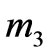
。已知水的密度为，测得的绿豆的密度____________________。（用已知量和测量量表示）【答案】
【解析】
【详解】绿豆的质量
矿泉水瓶的体积为
瓶内装入绿豆后，又装入的水的质量为
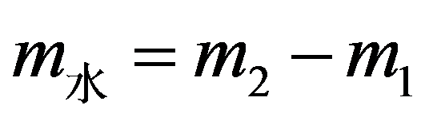
这些水的体积为
绿豆的体积
绿豆的密度
23. 若相同质量的不同物质，升高相同的温度，则可认为吸收热量较多的物质吸热性能较强。为了比较A、B两种液体的吸热性能，某同学在两个完全相同的烧瓶内分别装入质量相等的A和B两种液体、阻值不变的电阻丝（）及温度计，如图甲、乙所示。将、按图丙所示接入电路进行实验，闭合开关一段时间后，两液体均未沸腾，记录两种液体升高的温度和。若，不计热量损失，请分析判断哪种液体的吸热性能较强。
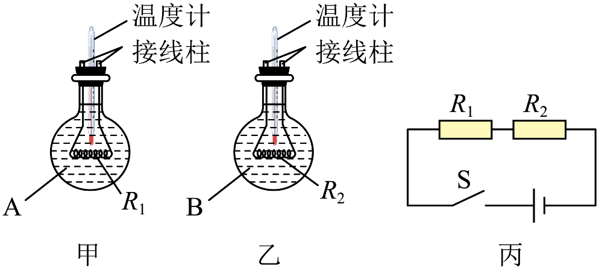
【答案】B液体吸热性能较强
【解析】
【详解】由图丙可知，电阻丝和串联，通过它们的电流和通电时间相同，，由可知，一段时间后，放出的热量更多，不计热量损失，B液体吸收的热量更多，即；由可得，比热容，两液体的质量相等，，，可得
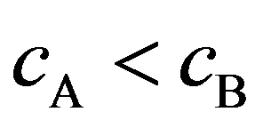
，B液体的比热容较大，故B吸热性能较强。四、科普阅读题（共4分）
24. 阅读下面的材料，并依据材料回答问题。
“节能减排”的守护者——高精度温室气体综合探测卫星
2026年4月，我国成功发射高精度温室气体综合探测卫星（DQ-2），它是国际上首颗主被动协同高精度温室气体探测卫星，可实现对全球温室气体的大范围探测。
DQ-2卫星上搭载的大气探测激光雷达是主动探测的核心设备，其工作原理：激光雷达发出易与待测气体粒子发生明显相互作用的激光，并接收反射的回波信号，大气中待测气体浓度越高，相同路径下与激光发生相互作用的粒子数越多，回波信号的能量就越弱，这样就可以通过回波信号对该气体的浓度进行分析。
DQ-2卫星在对二氧化碳气体进行实际探测时，激光雷达需要同时发射能量近似相等的两束平行激光，其中一束激光与二氧化碳分子有明显相互作用，另一束激光与其无明显相互作用，并且这两束激光与除二氧化碳气体以外的大气粒子及地面相互作用效果相同。通过测量两束激光回波信号的能量比，并将它与两束激光发射时的能量比进行比较，可分析得到激光路径上的二氧化碳浓度。DQ-2卫星还可以通过测量两束激光在不同高度回波信号的时间信息，再结合能量信息最终获得不同高度大气中二氧化碳浓度的信息。
DQ-2卫星将服务于国家“碳达峰”和“碳中和”双碳国家战略，同时为全球环境监测、气候气象研究提供支撑。
（1）DQ-2卫星是国际上首颗主被动协同_____温室气体探测卫星。
（2）在获取不同高度大气中二氧化碳浓度信息的过程中，DQ-2卫星通过测量回波信号的_____（选填“时间”或“能量比”）信息，从而获取回波信号返回位置的高度信息。
（3）如图所示，DQ-2卫星第一次经过某地上空位置时，发射能量近似相等的两束激光①和②，一段时间后接收到激光①和②由地面位置反射的回波信号的能量分别为、
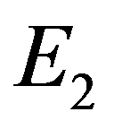
，且。卫星第二次经过该地上空时，再次发射两束与第一次测量时相同的激光，接收到从反射的回波信号的能量为、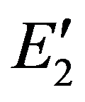
，且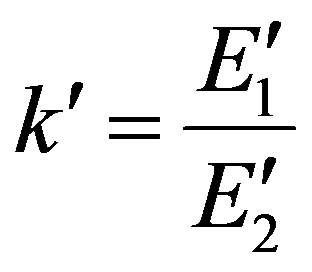
。已知，则激光_________（选填“①”或“②”）与二氧化碳分子有明显的相互作用，若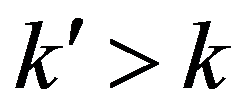
，则第二次测得的二氧化碳浓度_________（选填“高于”“等于”或“低于”）第一次测得的二氧化碳浓度。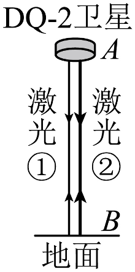
【答案】（1）高精度 （2）时间
（3） ①. ① ②. 低于
【解析】
【小问1详解】
由材料中对DQ-2卫星的定位描述可知，它是国际上首颗主被动协同高精度温室气体探测卫星。
【小问2详解】
激光传播速度恒定，由可知，回波信号的传播时间对应反射位置与卫星的距离，可据此获取高度信息，故填时间。
【小问3详解】
[1]二氧化碳浓度越高，与其有明显相互作用的激光回波能量越弱。因
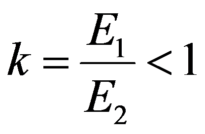
，即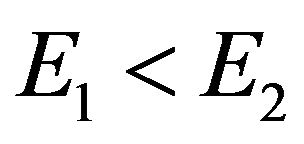
，故激光①与二氧化碳分子有明显相互作用。[2]两束激光除与二氧化碳的作用外，其余衰减效果相同，故值仅由二氧化碳浓度决定，浓度越高，值越小。因，故第二次测得的二氧化碳浓度低于第一次。
五、计算题（共8分，25、26题各4分）
25. 某品牌电热饮水机具有加热和保温功能，其简化电路如图所示，其中为手动开关，为自动温控开关。表中为该电热饮水机铭牌上的部分参数，求：
额定电压 | 220 V |
额定加热功率 | 1100 W |
额定保温功率 | 22 W |
（1）电热饮水机处于额定保温状态时，电路中的电流；
（2）电阻的阻值。
【答案】（1）0.1A
（2）2156Ω
【解析】
【小问1详解】
由题意，由可得，电热饮水机处于额定保温状态时，电路中的电流
【小问2详解】
开关和均闭合时，电路为只有的简单电路，电热饮水机处于加热状态。由可得，的电阻
开关闭合、断开时，和串联，电热饮水机处于保温状态，电路总电阻
由串联电路的电阻特点可得，电阻的阻值
26. 我国的高铁规模雄踞世界第一，高铁技术处在世界最前沿。高铁运行的动力来源是电力系统提供的电能，列车消耗电能主要用于两部分：一是为电机提供动力，二是为车厢内各种用电器提供电能。列车运行时，会受到不同种类的阻力，其中空气阻力影响最大，车速越大，列车受到的空气阻力就越大，导致需要电机提供的牵引力越大，耗电越快。如图所示为某列车试验阶段所受空气阻力随速度变化的关系图像。该列车以的速度在水平直轨道上做匀速直线运动，所受空气阻力占总阻力的80%，忽略车厢内用电器的耗电。
（1）求列车受到的总阻力的大小；
（2）求列车运行电机牵引力做的功；
（3）已知该列车电机将电能转化为机械能的效率为94%，若该列车仍以的速度在水平直轨道上做匀速直线运动，但受到的总阻力减小5%，求列车运行能节省的电能。
【答案】（1）
（2）
（3）
【解析】
【小问1详解】
时，由题图可知，空气阻力
总阻力
【小问2详解】
列车在水平轨道上做匀速直线运动，牵引力等于总阻力
故
列车运行通过的距离
牵引力做的功
【小问3详解】
列车仍在水平轨道上做匀速直线运动，牵引力等于总阻力
牵引力的减小量
列车运行牵引力做功的减少量
列车电机的效率，故列车节省的电能